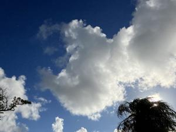
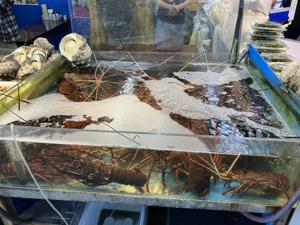
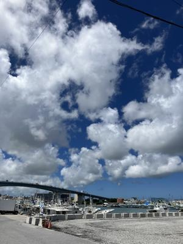

うるがいの話 ある日
最新: 定休日だった【うるがいの話 ある日】とは 一日だけのプログです
『うるがいの話』の最新一日だけのプログで、通信料が少なく経済的だ。カニの画像をクリックすると全ての日付が載る『うるがいの話』サイトを表示します
|
|
【うるがいの話】 うるがい(ｳﾙｶﾞｲ urugai)とは、『もずくがに』の名前でとても大きくなります。 |
|---|---|
|
|
【カミマヤーの話】 猫のことを方言でマヤーといいます。カミマヤー（kamimayaa）とは、神の猫のことです。 |
|
【たながぁの音楽】 たながぁ（ﾀﾅｶﾞｰ tanagaa）とは手長えびのことで、何種類かあり大きいのは車 エビぐらいになります。 |

|
【ぶながぁの話】 ぶながぁ(ﾌﾞﾅｶﾞｰ bunagaa)とは、赤い髪の毛、赤い身体、そして身長は１ｍ２０ｃｍ ぐらい、川の蟹を食べているの目撃された。場所は沖縄県国頭郡大宜味村のと ある村僕の隣近所に住んでいる爺さんから、聞いた話です。 |
|
|
【ギーマの話】 ギーマ(giima)とは、山原の里山に咲くスズランに似た、 花を付けます。実は食べられます、 気が付くと口の周りが紫になっています。 |
2024年06月26日 (水）定休日だった
15:07
  
いつの間にか度が合わなくなった、グッチの黒縁のメガネ。度を直そうとメ
ガネの専門店へ、バイクへ行く。閉まっていた、今日は定休日だった。また
やってしまった。専門店の場合は、定休日があるのでこれまでも同じ失敗を
やらかしている。ま、緊急性はないので、と気落ちしながら泊魚市へ行く。
私の次女の同級生が、とある会社の一番偉い人になると新聞の載っていた。
妹も生きていれば、還暦である。
昨日の夜、ニフティでメールを確認しようとすると繋がらない！、諦める。
【復旧】ＷＥＢメールがご利用いただけない不具合が発生しておりました
６月２５日に発生したＷＥＢメールの障害は復旧いたしました。
現在は問題なくご利用いただけます。
長時間に渡り、ご迷惑をおかけして申し訳ございませんでした。
障害発生時刻
６月２５日（火）２０：１０頃ー２３：５７
２０２４年６月２６日 ００時０９分
有料の国産のメールサービス、大丈夫だろうか？と心配になる。そういえば
ｆｉｒｅｂａｓｅ（無料）を利用している『ギーマの話』のサイトが、おと
といからリンクが展開されなくなってしまった。オロオロ、唐船ドーイが終
えたら、そのうちなんとかするべ。
１５時０１分 ビットコインの総資産 ￥２８、５５７（↑２６０）